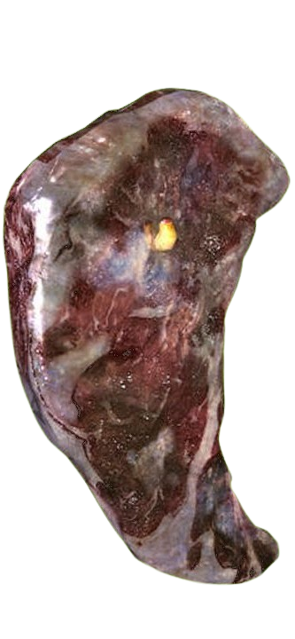

Are you sure you want to reset MEAT.exe? This is permanent. All MEAT, buildings, upgrades, statistics, and saved progress on this device will be lost.
Enter this code on the other device within ten minutes.
This will overwrite the current save on this device.
Would you like to navigate to the Cursed Relic Randomizer?